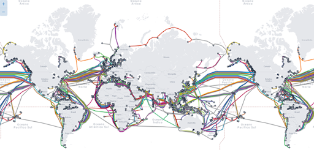
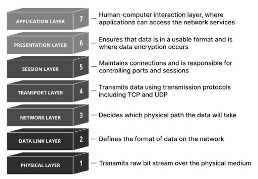
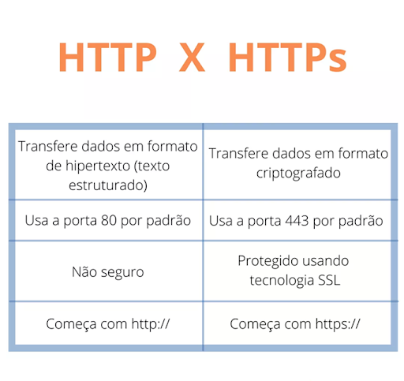
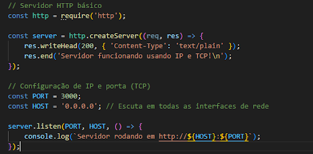

Uma rede de computadores é um conjunto de dispositivos (computadores, servidores, roteadores etc.)
interconectados, que podem trocar dados entre si.
Rede Miníma
Esse termo não tem uma definição universal bem padronizada — poderia significar, por exemplo, o menor
conjunto de máquinas e conexões necessário para constituir uma rede funcional (como 2 computadores
conectados diretamente), ou uma rede com o menor número possível de dispositivos/serviços. Em geral, depende
do contexto em que o termo é usado.
Internet
A Internet é, essencialmente, uma gigantesca rede de computadores — ou melhor, um conjunto de muitas redes
interligadas — usando protocolos comuns, que permite comunicação global entre dispositivos.
World Wide Web
A Web é um dos serviços que funcionam sobre a Internet: um sistema de publicação e acesso a
páginas/informações (hipertexto, hipermídia) usando protocolos da camada de aplicação.
Fibra Óptica
Esse “mapa de fibra óptica global” revela que mesmo a “Internet” que pensamos como algo virtual depende de
infraestrutura física real — cabos, repetidores, estações terrestres subaquáticas, roteadores. Esse tipo de
mapa deixa mais tangível a ideia da Internet como algo “realmente conectado no mundo físico”.

Componentes de Hardware na Rede Wifi
Roteador ou ponto de acesso (access point) com antena/de modem Wi-Fi — que transmite sinais sem fio (ondas
de rádio).
Dispositivos clientes com adaptadores Wi-Fi (notebook, celular, smart TV, etc.).
Infraestrutura de “backbone” ou conexão à Internet (modem, fibra, cabo, enlace com o provedor).
Componentes de Hardware na Rede Local
Cabos de rede (ex: cabo Ethernet Cat5e, Cat6, etc.)
Switches ou hubs para conectar múltiplos dispositivos.
Roteador (às vezes combinado com modem).
Placas de rede nos dispositivos finais (computadores, servidores) — ou interfaces físicas.
Protocolo de Comunicação
Um protocolo de rede é um conjunto padronizado de regras para formatação, envio, recepção e interpretação de
dados entre máquinas. Permite que diferentes dispositivos “conversem” com clareza. Em redes, protocolos são
organizados por camadas: cada camada tem responsabilidades claras, e um protocolo de camada alta “desce”
pelas camadas até alcançar o hardware, que transmite os dados fisicamente.
Modelo OSI
É um modelo de referência teórico criado para padronizar e estruturar a comunicação em redes através de 7
camadas: Física, Enlace, Rede, Transporte, Sessão, Apresentação e Aplicação.

Modelo TCP/IP
É o conjunto de protocolos efetivamente usado pela Internet moderna. Tem uma estrutura mais prática, com 4
camadas: Aplicação, Transporte, Internet e Acesso à Rede. Equivale à implementação real da comunicação entre
diversos computadores na Internet.
Protocolo IPV4
É a versão tradicional do Protocolo de Internet. Usa endereços de 32 bits, normalmente expressos como quatro
octetos (ex: 192.168.0.1). IPv4 é “sem conexão” e baseado no conceito de comutação de pacotes: envia pacotes
pela rede sem garantir uma conexão contínua de longa duração.
Protocolo IPV6
É a versão mais recente do protocolo IP, criada para superar limitações do IPv4 — especialmente a limitação
de endereços (IPv4 tem ~4,3 bilhões de endereços possíveis, o que não é suficiente diante de tantos
dispositivos). IPv6 usa endereços de 128 bits — o que amplia drasticamente o espaço de endereçamento.
Protocolo HTTP & HTTPS
HTTP (HyperText Transfer Protocol) É o protocolo de comunicação usado na Web para transferência de páginas,
arquivos, recursos entre cliente (browser) e servidor. Faz parte da camada de aplicação.
HTTPS é a versão segura do HTTP, usando criptografia (SSL/TLS) para proteger os dados transmitidos entre
cliente e servidor — garantindo confidencialidade e integridade.

Configuração do IP e o TCP em uma programação backend com node.js
Normalmente ao programar um servidor em Node.js você não precisa “configurar” o IP/TCP manualmente — o
sistema operacional e a pilha de rede do servidor cuidam disso. O que você faz no backend é “ouvir”
requisições em uma porta, usando algo como sockets ou um framework HTTP.
Você basicamente define a porta e o endereço de escuta (às vezes 0.0.0.0 ou localhost) ao iniciar o
servidor. O sistema operacional lida com a implementação de TCP/IP.

Exemplo de framework HTTP em Node.js
Um dos frameworks mais usados é o Express (Node.js). Ele facilita a criação de servidores HTTP, definição de
rotas, tratamento de requisições/respostas etc.